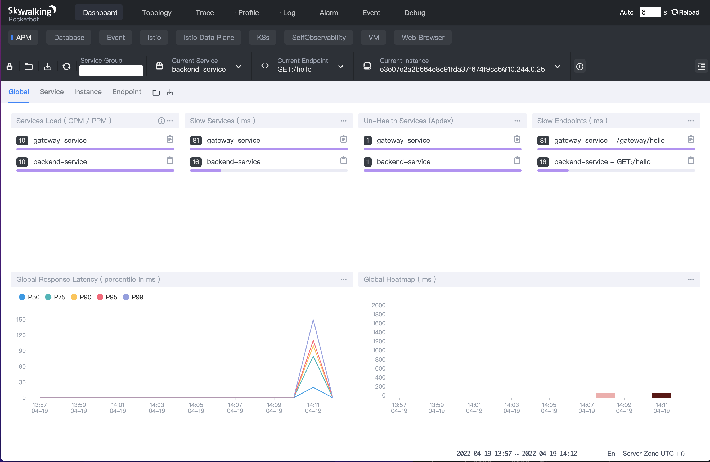

如何使用java探针注入器?
目录
1. 介绍
1.1 SWCK 是什么？
SWCK是部署在 Kubernetes 环境中，为 Skywalking 用户提供服务的平台，用户可以基于该平台使用、升级和维护 SkyWalking 相关组件。
实际上，SWCK 是基于 kubebuilder 开发的Operator，为用户提供自定义资源（ CR ）以及管理资源的控制器（ Controller ），所有的自定义资源定义（CRD）如下所示：
1.2 java 探针注入器是什么？
对于 java 应用来说，用户需要将 java 探针注入到应用程序中获取元数据并发送到 Skywalking 后端。为了让用户在 Kubernetes 平台上更原生地使用 java 探针，我们提供了 java 探针注入器，该注入器能够将 java 探针通过 sidecar 方式注入到应用程序所在的 pod 中。 java 探针注入器实际上是一个Kubernetes Mutation Webhook控制器，如果请求中存在 annotations ，控制器会拦截 pod 事件并将其应用于 pod 上。
2. 主要特点
- 透明性。用户应用一般运行在普通容器中而 java 探针则运行在初始化容器中，且两者都属于同一个 pod 。该 pod 中的每个容器都会挂载一个共享内存卷，为 java 探针提供存储路径。在 pod 启动时，初始化容器中的 java 探针会先于应用容器运行，由注入器将其中的探针文件存放在共享内存卷中。在应用容器启动时，注入器通过设置 JVM 参数将探针文件注入到应用程序中。用户可以通过这种方式实现 java 探针的注入，而无需重新构建包含 java 探针的容器镜像。
- 可配置性。注入器提供两种方式配置 java 探针：全局配置和自定义配置。默认的全局配置存放在 configmap 中，用户可以根据需求修改全局配置，比如修改
backend_service的地址。此外，用户也能通过 annotation 为特定应用设置自定义的一些配置，比如不同服务的service_name名称。详情可见 java探针说明书。 - 可观察性。每个 java 探针在被注入时，用户可以查看名为
JavaAgent的 CRD 资源，用于观测注入后的 java 探针配置。详情可见 JavaAgent说明。
3. 安装SWCK
在接下来的几个步骤中，我们将演示如何从0开始搭建单机版的 Kubernetes 集群，并在该平台部署0.6.1版本的 SWCK。
3.1 工具准备
首先，你需要安装一些必要的工具，如下所示：
3.2 搭建单机版 Kubernetes集群
在安装完 kind 工具后，可通过如下命令创建一个单机集群。
注意！如果你的终端配置了代理，在运行以下命令之前最好先关闭代理，防止一些意外错误的发生。
$ kind create cluster --image=kindest/node:v1.19.1
在集群创建完毕后，可获得如下的pod信息。
$ kubectl get pod -A
NAMESPACE NAME READY STATUS RESTARTS AGE
kube-system coredns-f9fd979d6-57xpc 1/1 Running 0 7m16s
kube-system coredns-f9fd979d6-8zj8h 1/1 Running 0 7m16s
kube-system etcd-kind-control-plane 1/1 Running 0 7m23s
kube-system kindnet-gc9gt 1/1 Running 0 7m16s
kube-system kube-apiserver-kind-control-plane 1/1 Running 0 7m23s
kube-system kube-controller-manager-kind-control-plane 1/1 Running 0 7m23s
kube-system kube-proxy-6zbtb 1/1 Running 0 7m16s
kube-system kube-scheduler-kind-control-plane 1/1 Running 0 7m23s
local-path-storage local-path-provisioner-78776bfc44-jwwcs 1/1 Running 0 7m16s
3.3 安装证书管理器(cert-manger)
SWCK 的证书都是由证书管理器分发和验证，需要先通过如下命令安装证书管理器cert-manger。
$ kubectl apply -f https://github.com/jetstack/cert-manager/releases/download/v1.3.1/cert-manager.yaml
验证 cert-manger 是否安装成功。
$ kubectl get pod -n cert-manager
NAME READY STATUS RESTARTS AGE
cert-manager-7dd5854bb4-slcmd 1/1 Running 0 73s
cert-manager-cainjector-64c949654c-tfmt2 1/1 Running 0 73s
cert-manager-webhook-6bdffc7c9d-h8cfv 1/1 Running 0 73s
3.4 安装SWCK
java 探针注入器是 SWCK 中的一个组件，首先需要按照如下步骤安装 SWCK：
- 输入如下命令获取 SWCK 的 yaml 文件并部署在 Kubernetes 集群中。
$ curl -Ls https://archive.apache.org/dist/skywalking/swck/0.6.1/skywalking-swck-0.6.1-bin.tgz | tar -zxf - -O ./config/operator-bundle.yaml | kubectl apply -f -
- 检查 SWCK 是否正常运行。
$ kubectl get pod -n skywalking-swck-system
NAME READY STATUS RESTARTS AGE
skywalking-swck-controller-manager-7f64f996fc-qh8s9 2/2 Running 0 94s
3.5 安装 Skywalking 组件 — OAPServer 和 UI
- 在
default命名空间中部署 OAPServer 组件和 UI 组件。
$ kubectl apply -f https://raw.githubusercontent.com/apache/skywalking-swck/master/operator/config/samples/default.yaml
- 查看 OAPServer 组件部署情况。
$ kubectl get oapserver
NAME INSTANCES RUNNING ADDRESS
default 1 1 default-oap.default
- 查看 UI 组件部署情况。
$ kubectl get ui
NAME INSTANCES RUNNING INTERNALADDRESS EXTERNALIPS PORTS
default 1 1 default-ui.default [80]
4. 部署demo应用
在第3个步骤中，我们已经安装好 SWCK 以及相关的 Skywalking 组件，接下来按照全局配置以及自定义配置两种方式，通过两个 java 应用实例，分别演示如何使用 SWCK 中的 java 探针注入器。
4.1 设置全局配置
当 SWCK 安装完成后，默认的全局配置就会以 configmap 的形式存储在系统命令空间中，可通过如下命令查看。
$ kubectl get configmap skywalking-swck-java-agent-configmap -n skywalking-swck-system -oyaml
apiVersion: v1
data:
agent.config: |-
# The service name in UI
agent.service_name=${SW_AGENT_NAME:Your_ApplicationName}
# Backend service addresses.
collector.backend_service=${SW_AGENT_COLLECTOR_BACKEND_SERVICES:127.0.0.1:11800}
# Please refer to https://skywalking.apache.org/docs/skywalking-java/latest/en/setup/service-agent/java-agent/configurations/#table-of-agent-configuration-properties to get more details.
在 kind 创建的 Kubernetes 集群中， SkyWalking 后端地址和 configmap 中指定的地址可能不同，我们需要使用真正的 OAPServer 组件的地址 default-oap.default 来代替默认的 127.0.0.1 ，可通过修改 configmap 实现。
$ kubectl edit configmap skywalking-swck-java-agent-configmap -n skywalking-swck-system
configmap/skywalking-swck-java-agent-configmap edited
$ kubectl get configmap skywalking-swck-java-agent-configmap -n skywalking-swck-system -oyaml
apiVersion: v1
data:
agent.config: |-
# The service name in UI
agent.service_name=${SW_AGENT_NAME:Your_ApplicationName}
# Backend service addresses.
collector.backend_service=${SW_AGENT_COLLECTOR_BACKEND_SERVICES:default-oap.default:11800}
# Please refer to https://skywalking.apache.org/docs/skywalking-java/latest/en/setup/service-agent/java-agent/configurations/#table-of-agent-configuration-properties to get more details.
4.2 设置自定义配置
在实际使用场景中，我们需要使用 Skywalking 组件监控不同的 java 应用，因此不同应用的探针配置可能有所不同，比如应用的名称、应用需要使用的插件等。为了支持自定义配置，注入器提供 annotation 来覆盖默认的全局配置。接下来我们将分别以基于 spring boot 以及 spring cloud gateway 开发的两个简单java应用为例进行详细说明，你可以使用这两个应用的源代码构建镜像。
# build the springboot and springcloudgateway image
$ git clone https://github.com/dashanji/swck-spring-cloud-k8s-demo
$ cd swck-spring-cloud-k8s-demo && make
# check the image
$ docker images
REPOSITORY TAG IMAGE ID CREATED SIZE
gateway v0.0.1 51d16251c1d5 48 minutes ago 723MB
app v0.0.1 62f4dbcde2ed 48 minutes ago 561MB
# load the image into the cluster
$ kind load docker-image app:v0.0.1 && kind load docker-image gateway:v0.0.1
4.3 部署 spring boot 应用
- 创建
springboot-system命名空间。
$ kubectl create namespace springboot-system
- 给
springboot-system命名空间打上标签使能 java 探针注入器。
$ kubectl label namespace springboot-system swck-injection=enabled
- 接下来为 spring boot 应用对应的部署文件
springboot.yaml，其中使用了 annotation 覆盖默认的探针配置，比如service_name，将其覆盖为backend-service。
需要注意的是，在使用 annotation 覆盖探针配置之前，需要增加
strategy.skywalking.apache.org/agent.Overlay: "true"来使覆盖生效。
apiVersion: apps/v1
kind: Deployment
metadata:
name: demo-springboot
namespace: springboot-system
spec:
selector:
matchLabels:
app: demo-springboot
template:
metadata:
labels:
swck-java-agent-injected: "true" # enable the java agent injector
app: demo-springboot
annotations:
strategy.skywalking.apache.org/agent.Overlay: "true" # enable the agent overlay
agent.skywalking.apache.org/agent.service_name: "backend-service"
spec:
containers:
- name: springboot
imagePullPolicy: IfNotPresent
image: app:v0.0.1
command: ["java"]
args: ["-jar","/app.jar"]
---
apiVersion: v1
kind: Service
metadata:
name: demo
namespace: springboot-system
spec:
type: ClusterIP
ports:
- name: 8085-tcp
port: 8085
protocol: TCP
targetPort: 8085
selector:
app: demo-springboot
- 在
springboot-system命名空间中部署spring boot应用。
$ kubectl apply -f springboot.yaml
- 查看部署情况。
$ kubectl get pod -n springboot-system
NAME READY STATUS RESTARTS AGE
demo-springboot-7c89f79885-dvk8m 1/1 Running 0 11s
- 通过
JavaAgent查看最终注入的 java 探针配置。
$ kubectl get javaagent -n springboot-system
NAME PODSELECTOR SERVICENAME BACKENDSERVICE
app-demo-springboot-javaagent app=demo-springboot backend-service default-oap.default:11800
4.4 部署 spring cloud gateway 应用
- 创建
gateway-system命名空间。
$ kubectl create namespace gateway-system
- 给
gateway-system命名空间打上标签使能 java 探针注入器。
$ kubectl label namespace gateway-system swck-injection=enabled
- 接下来为 spring cloud gateway 应用对应的部署文件
springgateway.yaml，其中使用了 annotation 覆盖默认的探针配置，比如service_name，将其覆盖为gateway-service。此外，在使用spring cloud gateway时，我们需要在探针配置中添加spring cloud gateway插件。
需要注意的是，在使用 annotation 覆盖探针配置之前，需要增加
strategy.skywalking.apache.org/agent.Overlay: "true"来使覆盖生效。
apiVersion: apps/v1
kind: Deployment
metadata:
labels:
app: demo-gateway
name: demo-gateway
namespace: gateway-system
spec:
selector:
matchLabels:
app: demo-gateway
template:
metadata:
labels:
swck-java-agent-injected: "true"
app: demo-gateway
annotations:
strategy.skywalking.apache.org/agent.Overlay: "true"
agent.skywalking.apache.org/agent.service_name: "gateway-service"
optional.skywalking.apache.org: "cloud-gateway-3.x" # add spring cloud gateway plugin
spec:
containers:
- image: gateway:v0.0.1
name: gateway
command: ["java"]
args: ["-jar","/gateway.jar"]
---
apiVersion: v1
kind: Service
metadata:
name: service-gateway
namespace: gateway-system
spec:
type: ClusterIP
ports:
- name: 9999-tcp
port: 9999
protocol: TCP
targetPort: 9999
selector:
app: demo-gateway
- 在
gateway-system命名空间中部署spring cloud gateway应用。
$ kubectl apply -f springgateway.yaml
- 查看部署情况。
$ kubectl get pod -n gateway-system
NAME READY STATUS RESTARTS AGE
demo-gateway-758899c99-6872s 1/1 Running 0 15s
- 通过
JavaAgent获取最终注入的java探针配置。
$ kubectl get javaagent -n gateway-system
NAME PODSELECTOR SERVICENAME BACKENDSERVICE
app-demo-gateway-javaagent app=demo-gateway gateway-service default-oap.default:11800
5. 验证注入器
- 当完成上述步骤后，我们可以查看被注入pod的详细状态，比如被注入的
agent容器。
# get all injected pod
$ kubectl get pod -A -lswck-java-agent-injected=true
NAMESPACE NAME READY STATUS RESTARTS AGE
gateway-system demo-gateway-5bb77f6d85-lt4z7 1/1 Running 0 69s
springboot-system demo-springboot-7c89f79885-lkb5j 1/1 Running 0 75s
# view detailed state of the injected pod [demo-springboot]
$ kubectl describe pod -l app=demo-springboot -n springboot-system
...
Events:
Type Reason Age From Message
---- ------ ---- ---- -------
...
Normal Created 91s kubelet,kind-control-plane Created container inject-skywalking-agent
Normal Started 91s kubelet,kind-control-plane Started container inject-skywalking-agent
...
Normal Created 90s kubelet,kind-control-plane Created container springboot
Normal Started 90s kubelet,kind-control-plane Started container springboot
# view detailed state of the injected pod [demo-gateway]
$ kubectl describe pod -l app=demo-gateway -n gateway-system
...
Events:
Type Reason Age From Message
---- ------ ---- ---- -------
...
Normal Created 2m20s kubelet,kind-control-plane Created container inject-skywalking-agent
Normal Started 2m20s kubelet,kind-control-plane Started container inject-skywalking-agent
...
Normal Created 2m20s kubelet,kind-control-plane Created container gateway
Normal Started 2m20s kubelet,kind-control-plane Started container gateway
- 现在我们可以将服务绑定在某个端口上并通过 web 浏览器查看采样数据。首先，我们需要通过以下命令获取
gateway服务和ui服务的信息。
$ kubectl get service service-gateway -n gateway-system
NAME TYPE CLUSTER-IP EXTERNAL-IP PORT(S) AGE
service-gateway ClusterIP 10.99.181.145 <none> 9999/TCP 9m19s
$ kubectl get service default-ui
NAME TYPE CLUSTER-IP EXTERNAL-IP PORT(S) AGE
default-ui ClusterIP 10.111.39.250 <none> 80/TCP 82m
- 接下来分别启动2个终端将
service-gateway以及default-ui绑定到本地端口上，如下所示：
$ kubectl port-forward service/service-gateway -n gateway-system 9999:9999
Forwarding from 127.0.0.1:9999 -> 9999
Forwarding from [::1]:9999 -> 9999
$ kubectl port-forward service/default-ui 8090:80
Forwarding from 127.0.0.1:8090 -> 8080
Forwarding from [::1]:8090 -> 8080
- 使用以下命令通过
spring cloud gateway网关服务暴露的端口来访问spring boot应用服务。
$ for i in {1..10}; do curl http://127.0.0.1:9999/gateway/hello && echo ""; done
Hello World!
Hello World!
Hello World!
Hello World!
Hello World!
Hello World!
Hello World!
Hello World!
Hello World!
Hello World!
- 我们可以在 web 浏览器中输入
http://127.0.0.1:8090来访问探针采集到的数据。

- 所有服务的拓扑图如下所示。

- 查看
gateway-service网关服务的 trace 信息。

- 查看
backend-service应用服务的 trace 信息。

6. 结束语
如果你的应用部署在 Kubernetes 平台中，且需要 Skywalking 提供监控服务， SWCK 能够帮助你部署、升级和维护 Kubernetes 集群中的 Skywalking 组件。除了本篇博客外，你还可以查看 SWCK文档 以及 java探针注入器文档 获取更多的信息。如果你觉得这个项目好用，请给 SWCK 一个star! 如果你有任何疑问，欢迎在Issues或者Discussions中提出。